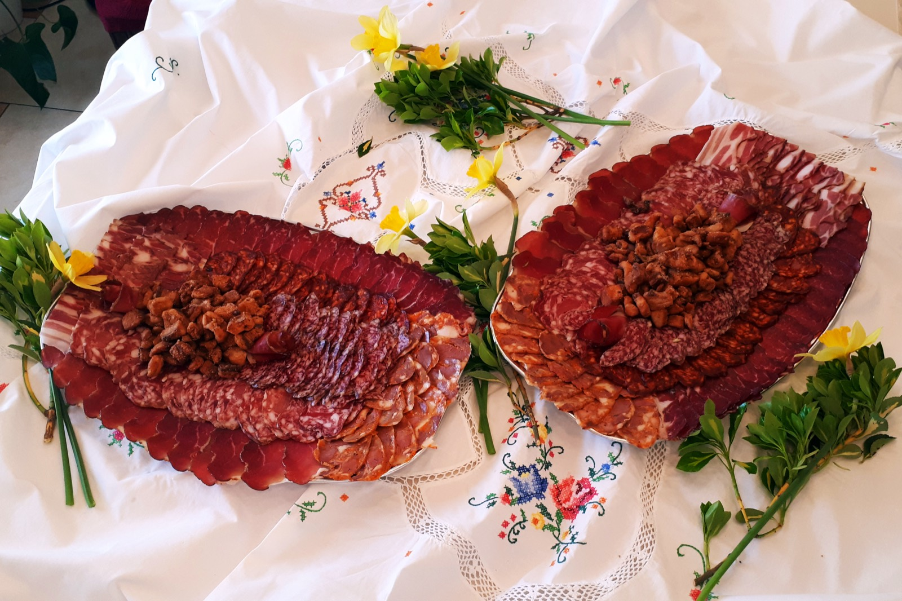

Svježe meso
U prodavaonicama nudimo dnevno svježe meso iz domaćeg uzgoja.
- junetina
- svinjetina
- teletina
Počeli smo kao mali obrt s jednom mesnicom. Danas imamo vlastitu klaonicu i pogon za preradu mesa u Klanjcu, a klanječku kobasicu, domaći zagorski špek i šunku nosimo u sedam vlastitih prodavaonica.

Proizvodi Mesnica Borošak izrađeni su od mesa porijeklom iz domaćeg uzgoja. Posebno smo ponosni na ove:
Kobasica koja nosi ime našeg mjesta, rađena po provjerenoj tradicionalnoj recepturi.
Zagorska klasika za stol, marendu i kuhinju.
Šunka po tradicionalnoj recepturi, od mesa iz domaćeg uzgoja.
Trajna salama izrađena po provjerenim recepturama.
Kao nekad – tlačenica po tradicionalnoj recepturi.
Obične i pikant – nezaobilazne na svakom dobrom roštilju.
Suhi buncek za grah, zelje i zagorske zimske ručkove.
Trajna kobasica i niz drugih proizvoda iz naše prerade.
Tvrtka Mesnice Borošak ima dugogodišnju tradiciju prerade mesa koja seže još u 1932. godinu, kada je počela s radom kao mali obrt s jednom mesnicom.
Danas posjedujemo vlastitu klaonicu i pogon za preradu mesa. Proizvode plasiramo preko vlastite maloprodajne mreže i putem veleprodaje.
Početak tradicije prerade mesa u Klanjcu.
Uslužno obavljamo klanja junadi, teladi, goveda, svinja i ovaca.
Sedam vlastitih prodavaonica – četiri u Zagorju i tri u Zagrebu.
U prodavaonicama nudimo dnevno svježe meso iz domaćeg uzgoja.
Daleko poznati ćevapi, pečenice i pljeskavice – sastavni dio svakog dobrog roštilja.
Pripremate domjenak ili slično druženje? Obratite nam se za izradu raznih mesnih plata.
Domaća salama, šunka i suhomesnato iz naše ponude – narezano i složeno za vaše goste. Recite nam za koliko osoba i za kada, a mi ćemo pripremiti platu.
| ponedjeljak – petak | 8 – 17 h |
| subota | 8 – 14 h |
| nedjelja | zatvoreno |
| utorak – subota | 8 – 16 h |
| nedjelja i ponedjeljak | zatvoreno |
| utorak – subota | 8 – 16 h |
| nedjelja i ponedjeljak | zatvoreno |
U sedam vlastitih prodavaonica: u Klanjcu, Tuheljskim Toplicama, Krapinskim Toplicama i Svetom Križu Začretju te u Zagrebu u TC-u Prečko i na tržnici Dolac. Adrese i radno vrijeme su na stranici Prodavaonice. Proizvode plasiramo i putem veleprodaje.
U prodavaonicama nudimo dnevno svježe meso iz domaćeg uzgoja – junetinu, svinjetinu i teletinu. Naši proizvodi izrađeni su od mesa porijeklom iz domaćeg uzgoja.
Da. Prema narudžbi pripremamo meso za roštilj, marinirano marinadom prema domaćem tradicionalnom receptu, te odležano meso (ramstek, rib eye). Narudžbe primamo na 049 550 254 i na mesnice.borosak@hi.ht.hr.
Da. Ako pripremate domjenak ili slično druženje, javite nam se za izradu mesnih plata.
Da, uslužno obavljamo klanja junadi, teladi, goveda, svinja i ovaca u vlastitoj klaonici u Klanjcu. Za dogovor nazovite 049 550 254.
Za sve vaše želje i potrebe stoje vam na raspolaganju djelatnici Mesnica Borošak.